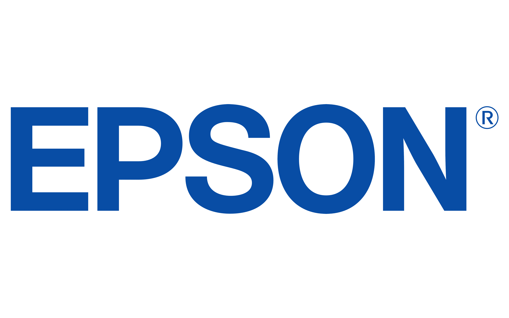

Work Experience

Research Scientist - Computer Vision & Robotics Lab
Epson
Mar 2023 - current
- Leading research on agentic AI for 2D detection, aimed at
efficiently and effectively learning complex, domain-specific
concepts.
- Developed an
interpretable 2D object and attribute detection system
tailored for non-technical individuals.
- Designed a two-stage adapter-based domain adaptation method
that utilizes a contrastive loss focused on hard-negative
samples.
- Enabled effective verification of the model’s understanding
by organizing internal knowledge hierarchically through clustering
of foundational concepts.
- Developed a plug-and-play, non-parametric detection head for
vision-language models.
- Proposed and developed a
prompt-based 2D keypoint detection pipeline that eliminates
keypoint-specific training needs while remaining robust in
multi-instance scenarios.
Lead Research Scientist
RoboEye.ai
Jul 2021 - Mar 2023
- Developed data-driven computer vision and robotics solutions
integrating latest AI techniques
- C++ robotics solution for bin-picking tasks using ROS, Qt5,
ZeroMQ, Protobuf, OpenCV, and PCL
- Real-time (<1 sec) 6D pose estimation pipeline (depth
completion + instance segmentation + pose estimation + pose
refinement + detection filtering)
- Fully automated online model training system using PyTorch,
NVIDIA Isaac Sim, OpenCV, and AWS
- Object detection performance tracking system using AWS,
Docker, W&B, Django, and PostgresSQL
- Deployed 50+ bin-picking systems that run 24/7 with minimal
human interventions
- Coordinated an R&D team of 20+ engineers by monitoring
progress using Jira
- Reviewed customer requests to construct project requirements
(scope, cost, and timelines)
- Set up internal protocols for a timely deployment of systems to
Chinese factories
Research Scientist
RoboEye.ai
Mar 2020 - Jul 2021
- Implemented state-of-the-art 6D pose estimation algorithms
in PyTorch
- Developed a robotics solution for bin-picking tasks in C++ using
ROS, Qt5, ZeroMQ, OpenCV, and PCL
- Set up quality assurance and data protection process through
GitLab CI using Docker and GCP

Research Scientist - Visual Display Intelligence Lab
Samsung Economics Research Institute
Apr 2019 – Mar 2020
- Invented the first generative modeling approach for
co-clustering; jointly learns disentangled representations of
dual data dimensions and their underlying interrelation in the
correlation space
- Implemented user-centric TV program recommendation by analyzing
watch history
- CI-GAN : Co-Clustering By Information Maximizing Generative
Adversarial Networks (ICME 2021)
- Co-informatic generative adversarial networks for efficient data
co-clustering (Patent ID: US20210097372A1, WO2021066530A1)

Software Engineer - Dynamic Ads Infra *
Meta
Jan 2018 – Apr 2018
- Dynamic Ads Infra Team supports product level advertisements by
applying the k-nearest neighbor algorithm to define the target
audience
- Redesigned the system to consider a wider range of products at an
earlier stage; increased the click-through rate
- Refactored existing code base to reduce latency and memory usage

Software Engineer - Core Infrastructure Team *
Uber
May 2017 – Aug 2017
- Complex Data Processing/Spark Team is focusing on improving
developers experiences with Spark within Uber as well as Spark
community by implementing various services relating big data
- Integrated Tensorflow and TensorflowOnSpark on Uber's Spark-based
notebook environment for data scientists
- Benchmarked performance and evaluated stability of
TensorFlowOnSpark on Uber infrastructure
- Transformation of existing MLlib job into TensorFlow job on Spark
reducing training time from 33 hours to 3 hours
- Investigating the integration of Tensorflow on various resource
managers to provide better-developing environments for deep
learning
- Investigating various Deep learning tools for Spark recommending
the right tools to use for various use cases
Software Engineer - Central Technology Organization *
Zynga
Aug 2016 – Dec 2016
- Developed new architecture for search on the internal webpage;
improved data integrity led to a 30% increase in search usage
(Amazon ElasticSearch, Amazon Kinesis Streams and Amazon SQS)
- Maintained the internal web service that organizes technical
products developed by Zynga
- Implemented web crawler that collects data from various
documentation archives allowing developers to share integration
guide internally (Angular.js, Node.js and MongoDB)
- Improved the backend system with daily data synchronization job
using Java and Couchbase
Software Engineer - Emerging Technologies Team *
SAP
Jan 2016 – Apr 2016
- The Emerging Technologies group is a dedicated team of skilled
technical, business, and design experts focused on innovating:
mobile, IoT, web, web of things, edge computing, in-memory
computing, extreme transaction processing, distributed data and
analytics' solutions that extend SAP's leading position
- Designed and developed SQLA backend system that supports OData
with distributed architecture
- Implemented a web application with extreme transaction processing
using jQuery, SAP UI5 and SQLA
- Developed a tool for tracking employee traffic using Node.js and
Reely Active Bluetooth sensors
- Integrated an automated testing tool (Robot Framework) to reduce
QA cycle from 3 days to 4 hours
Full Stack Developer *
Mozzaz Corporation
May 2015 – Aug 2015
- Mozzaz delivers care solutions for individuals facing behavioral
and mental challenges. Care Providers develop and administer
treatment programs, and monitor patient progress using the company's
innovative mobile solutions
- Developed a hybrid app with web development tools using Cordova;
Back-end development with C#
- Released new data analysis tool using Twilio API, Fitbit API,
Chart.js and AngularJS

LinkedIn
GitHub
Google Scholar
E-mail
CV